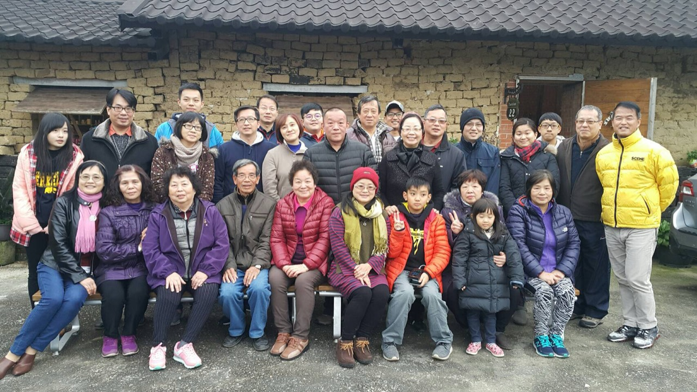
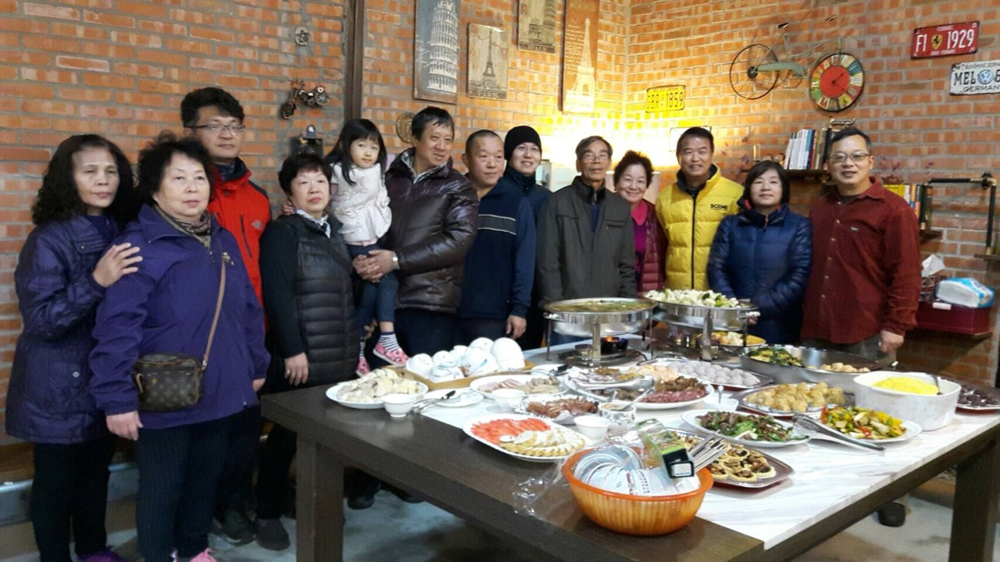
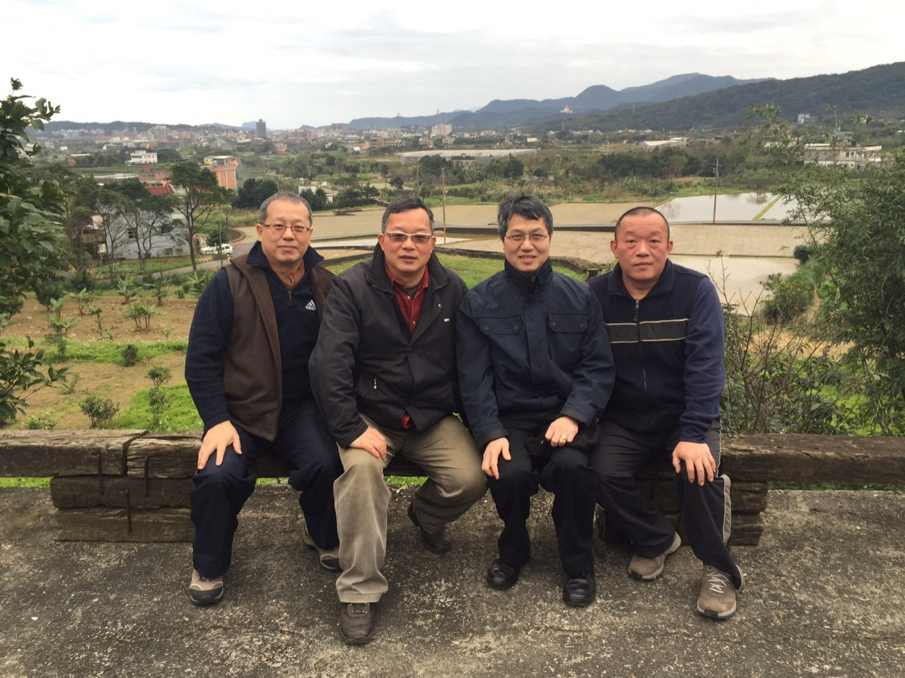
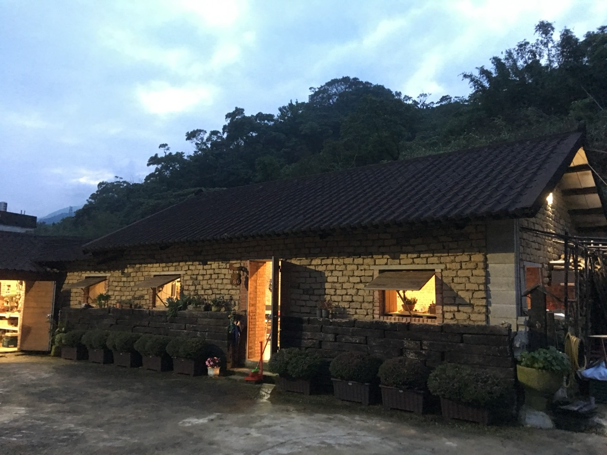
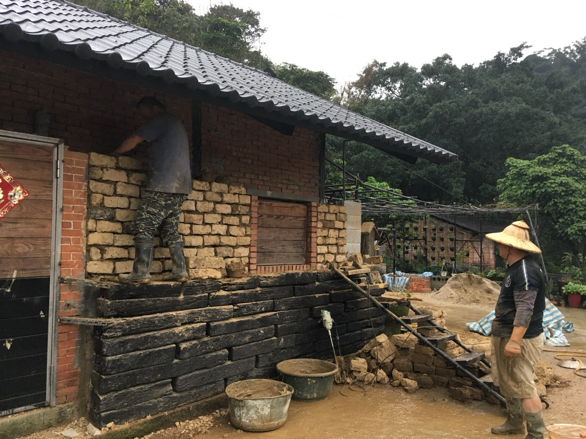
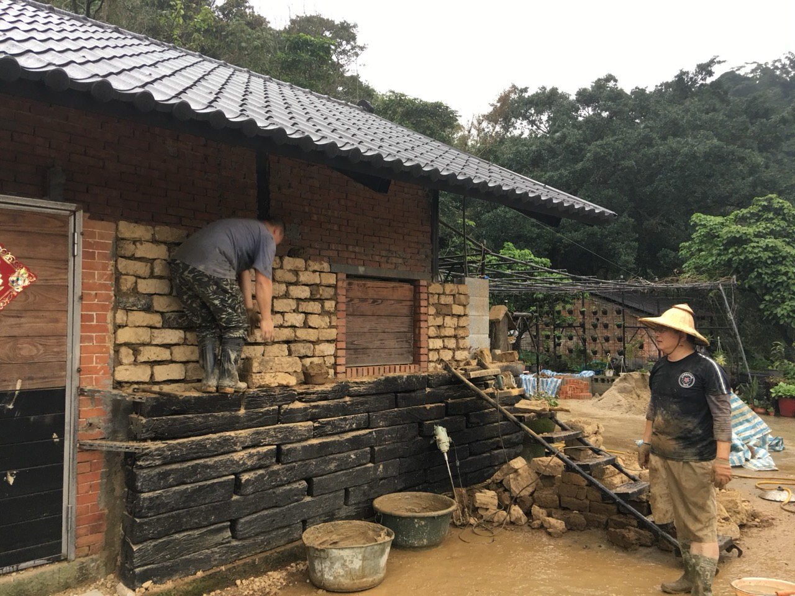
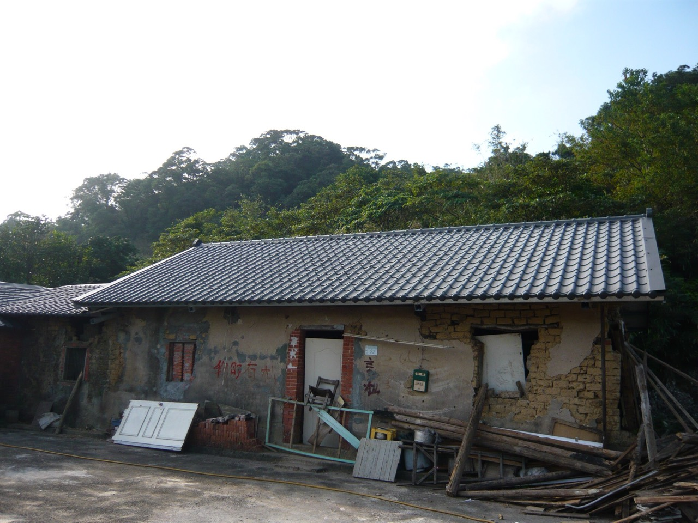
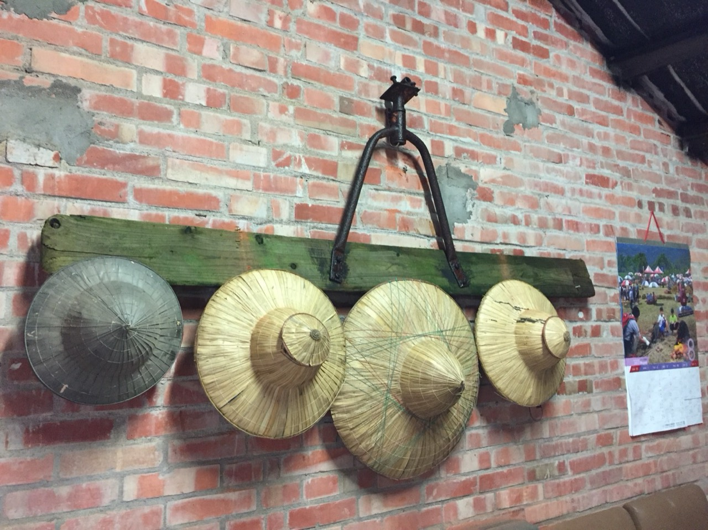
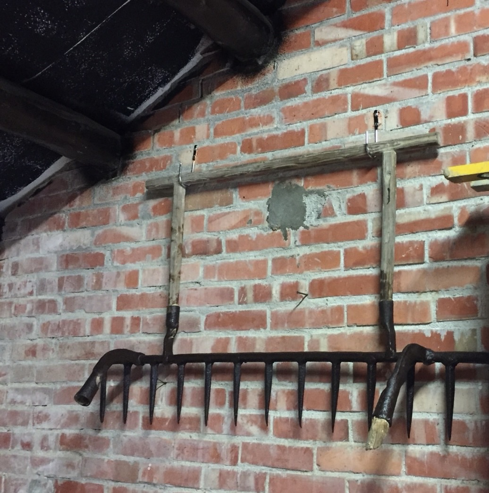
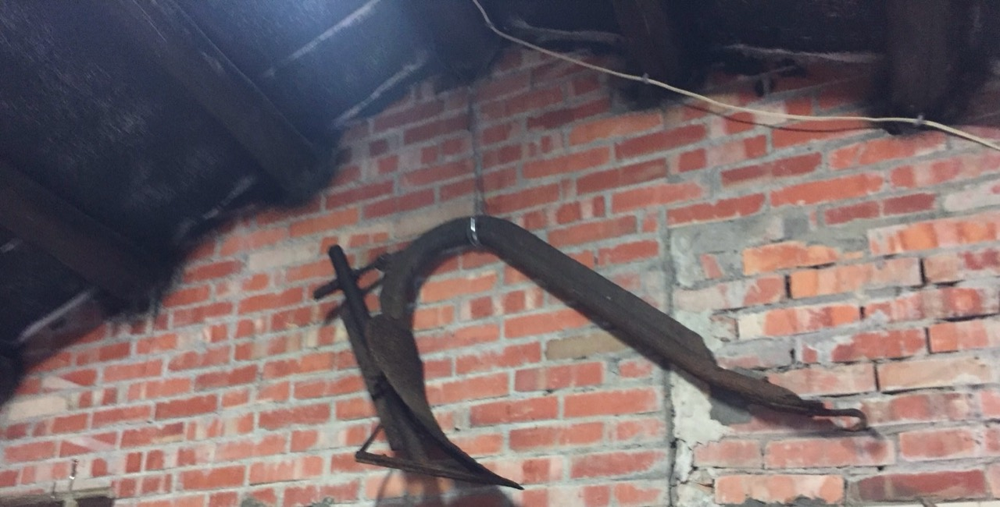

No.048
土埆厝
收藏說明
土埆厝照片記錄家族相聚、老屋外觀、室內餐敘、周邊山景， 以及泥磚牆修補與傳統農具陳列。這組照片把老屋的生活溫度、 修繕過程與家人團聚的片刻一併保存下來。

No.048
土埆厝照片記錄家族相聚、老屋外觀、室內餐敘、周邊山景， 以及泥磚牆修補與傳統農具陳列。這組照片把老屋的生活溫度、 修繕過程與家人團聚的片刻一併保存下來。
照片記錄








